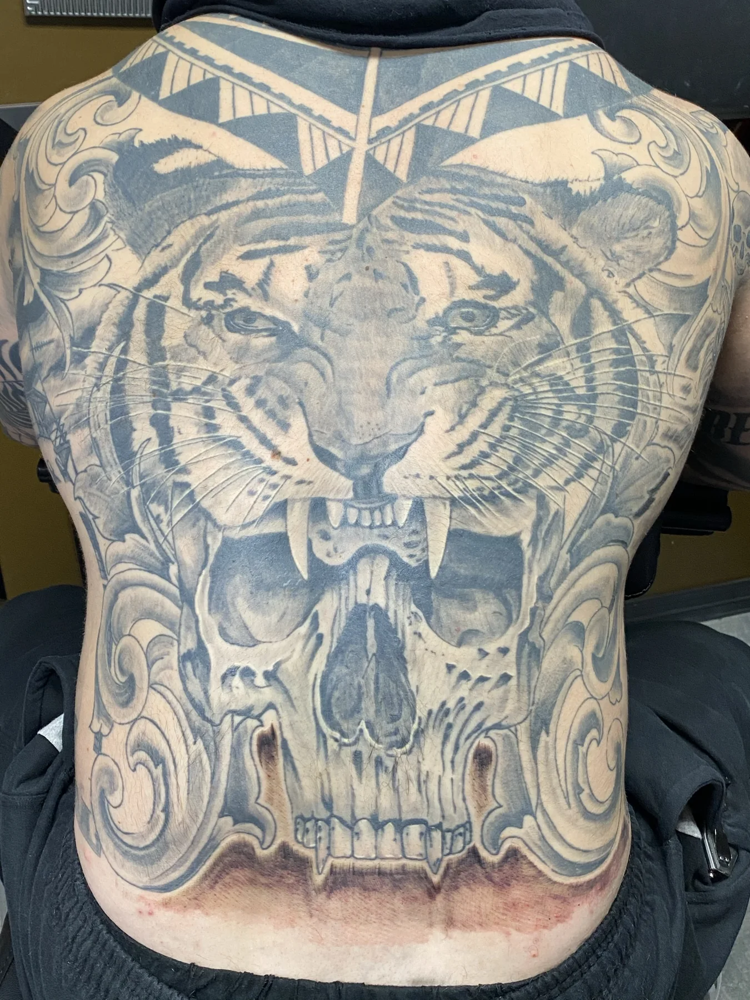

Value hierarchy
The strongest contrast is reserved for the tiger and other important focal transitions.
Project Study • Black-and-Gray Backpiece
This project study looks at how a large tiger focal point, skull elements, and dark atmosphere are organized across a full back.

Published project facts
The private client brief is not published. The visible design goal is a dominant tiger supported by skull imagery and dark environmental depth.
Composition analysis
Black-and-gray large-scale work can become visually muddy when every area receives the same amount of darkness and texture. This piece protects the tiger as the focal point by controlling the value and detail of the supporting skulls and background.
The skulls add narrative and movement without replacing the tiger as the first read. Open and softer areas give the darker sections separation, which is essential when the composition covers most of the back.
Design challenges
The strongest contrast is reserved for the tiger and other important focal transitions.
Skulls reinforce the mood while remaining subordinate to the central animal.
Foreground, secondary forms, and atmosphere are separated through detail and edge control rather than color.
The back allows the tiger’s face and fur texture to remain readable without reducing them to tiny marks.
Planning a related project
Bring the subject, mood, placement, size, and references that explain what you like about this work. Josh will design for your body and idea rather than reproduce another client’s tattoo.
Photography note
The current portfolio provides the photograph shown on this page. A separately identified healed photograph and exact session record have not been published for this project, so the page does not imply either one.
Build your own project
Share the subject, placement, approximate scale, and the specific design qualities you want Josh to consider.